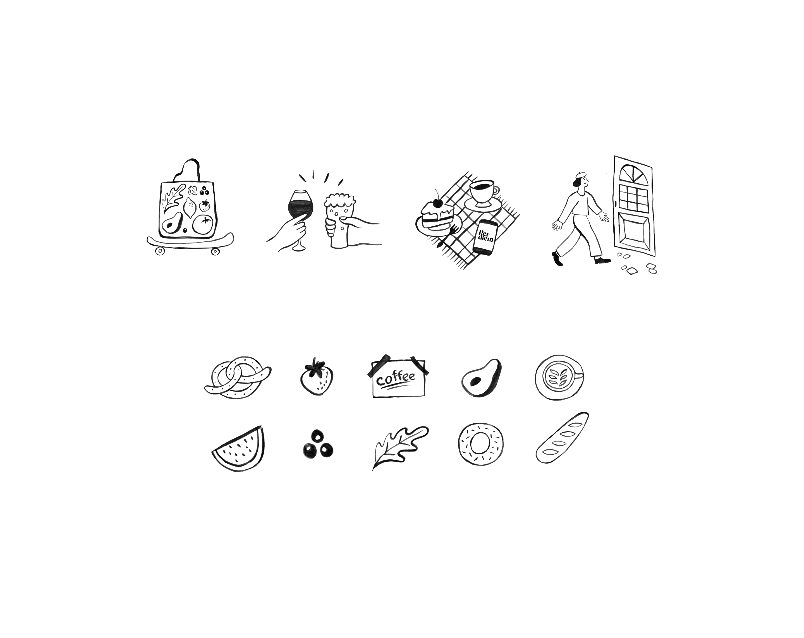
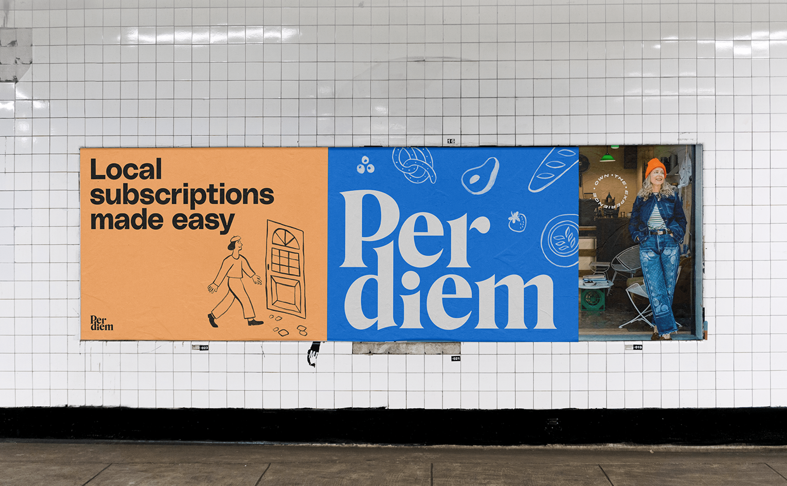
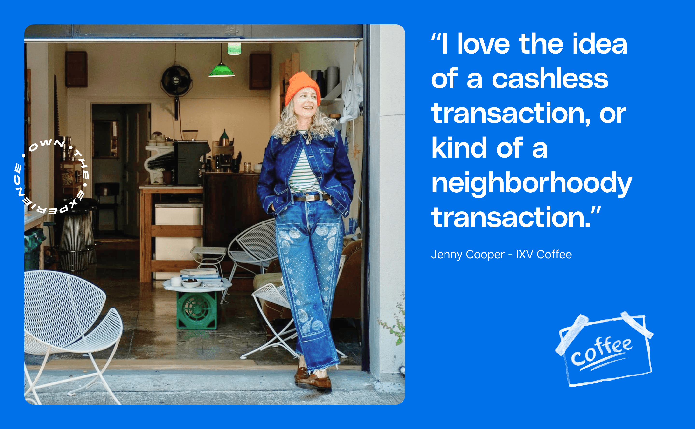
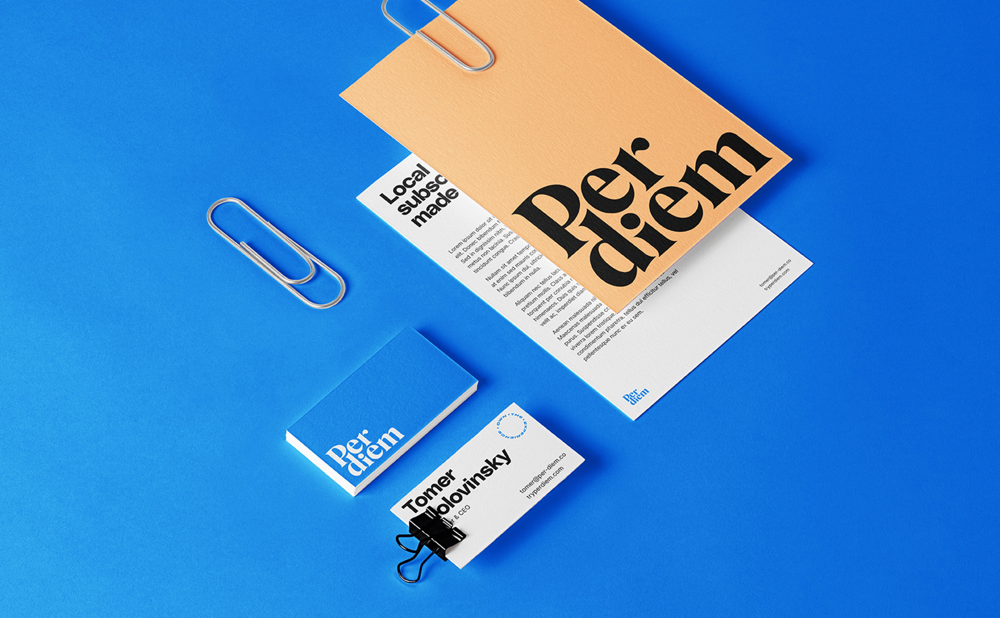
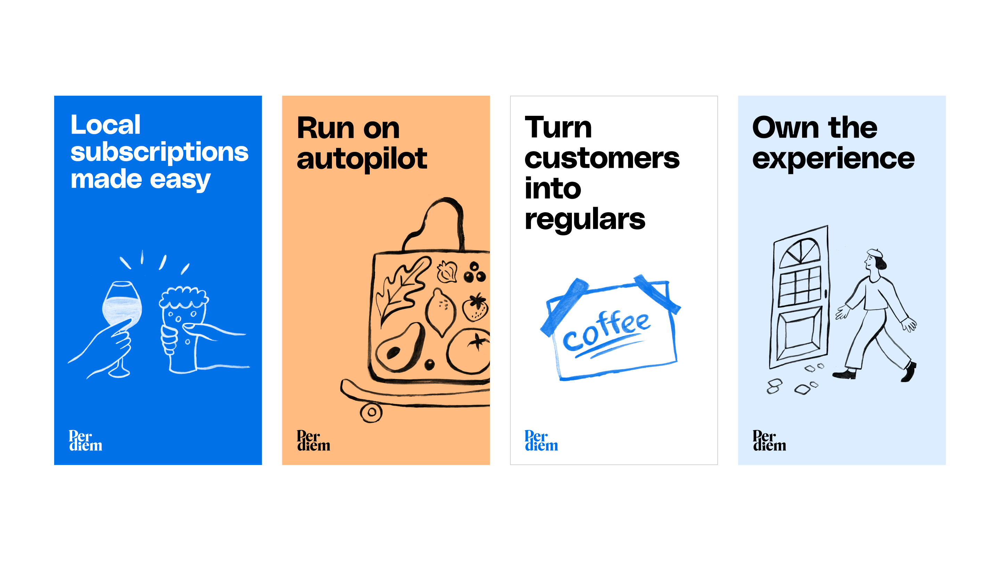
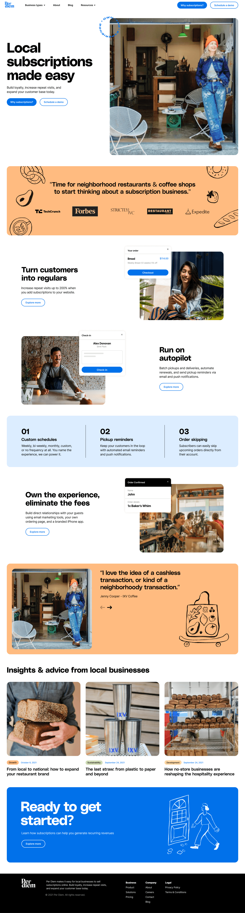

A 10-day brand sprint for Per Diem
Per Diem makes it easy for local businesses to sell subscriptions online
and give them all the marketing and fulfillment tools they need to build
their own Amazon Prime.
Client | Per Diem
Art Direction | Studio Under
Brand
lead designer | Anastasia Vlasenko
Illustrator | Anastasia
Vlasenko









